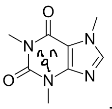

Caffeineの試薬保管庫
『氷点』感想
2025-09-12
涼しくなってきて、もうコンビニに肉まんが出てきました。
はいどーも、Caffeineです。小並感を並べていきます。
『氷点』を読みました。

バラエティ番組『笑点』の名前の由来として有名な作品ですね。
本を読むのはあまり得意ではないのですが、この小説は面白くて一気に読んでしまいました。
笑点の由来ということで、ほんわかした喜劇的な話を期待できる作品かと思ったら、ふたを開けてみるとかなりどろどろした話です。
チャップリンの言葉を借りれば喜劇的かもしれませんが…
エゴとエゴのぶつかりあいやそれによって生まれる不和を、読者が神の視点で面白がることができる、そんな作品です。
結末は非常に衝撃的で、またある意味すがすがしいものでした。 原罪としての人間の醜さや愚かさと私たちがどう向き合っていくかを、物語を通じて突き付けられた感じがします。
大衆向けに作られているということもあってか、かなり読みやすく、ページ数のわりに文字数が少ないので気軽に読んでみることをお勧めします。